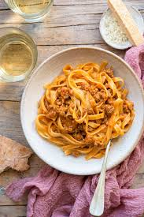

The original recipe for Pasta alla Bolognese (properly called Ragù alla Bolognese) is protected by the Academia Italian della Cucina, which registered the official version with the Bologna Chamber of Commerce.
Unlike international versions, authentic ragù is a thick meat sauce with very little tomato and necessarily includes milk to tenderize the meat and balance the flavor.
Ingredients:
- Meat: 400g minced beef (cartella cut or rib flap) and 150g minced pork belly.
- Sofritto: 60g onion, 60g carrot and 60g celery, all finely chopped.
- :Liquids:1 cup of wine (dry white or red), 1 cup of whole milk and about 1 cup of beef stock.
- Tomato: 200g passata (strained tomato) and 1 tablespoon of double tomato paste.
- Fat:Extra virgin olive oil or butter.
- Seasoning: Salt and Pepper. The use of nutmeg is common but optional in some variations.
Steps:
- Preparing the Base: Melt the pancetta in a heavy-bottomed pan (preferably earthenware or cast iron). Add the olive oil/butter and the soffritto (vegetables), sautéing over low heat until softened without browning.
- Browning the Meat: Increase the heat and add the beef. Stir constantly until the meat loses its pink color and begins to "fry" in its own fat.
- Deglazing with Wine: Pour in the wine and let it evaporate completely until you can no longer smell the alcohol.
- Adding Tomato and Broth:Add the tomato paste and passata. Add a little hot broth and cook covered, over very low heat, for at least 2 to 3 hours.
- The Secret of the Milk: Add the milk halfway through cooking (or at the end) and let it be fully absorbed. This gives the characteristic creamy texture of Bologna ragù.
Home